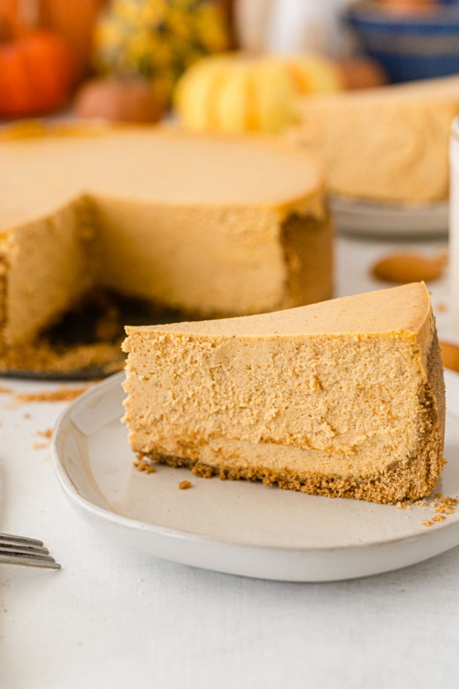

Pumpkin Cheesecake Recipe

Description
Nothing says holidays more than a pumpkin recipe and this one is guaranteed to make your guests happy if you have it at your next holiday gathering. This recipe is a lighter but still mouthwatering way of making a holiday standard, pumpkin cheesecake. While it can't be called "healthy" necessarily, halving the fat content makes this better overall, while still maintaining the delicious cheesecake decadence you know and love.
This cheesecake has about 15 grams of fat per serving, while the average cheesecake slice has 32 grams. This is accomplished through using reduced-fat vanilla wafers, unsweetened pumpkin puree, and low fat cream cheese. You can also reduce the sugar if you prefer a less sweet cheesecake. Cooking and pureeing your own pumpkin will add an even stronger taste of pumpkin as well, if you don't mind some extra work.
Ingredients
Crust:
- 8 oz reduced fat vanilla wafers
- 1 Tblsp butter, melted
Filling:
- 5 8 oz packages Neufchatel or similar 1/3 less fat cream cheese, room temperature
- 1/2 C granulated white sugar
- 1/2 C packed brown sugar
- 3 Tblsp all purpose flour
- 1 tsp ground cinnamon
- 3/4 tsp ground nutmeg
- 3/4 tsp ground ginger
- 1/4 tsp salt
- 1 dash allspice
- 4 large eggs
- 1 15 oz can unsweetened pumpkin puree
Steps
Prepare the Crust:
- Preheat oven to 400 degrees F.
- Place the cookies in a food processsor and pulse until finely ground. Add the butter; pulse 10 times or until mixture resembles coarse meal.
- Firmly press the mixture into the bottom of a 9-inch springform pan coated with nonstick spray. Bake for 10 minutes; cool on wire rack.
Make the Filling:
- Reduce the over temperatureto 325 degrees F.
- In a large bowl, use an electric mixer to beat the cream cheese at high speed until smooth. Add the granulated sugar and next 8 ingredients (through vanilla), beating well. Add the eggs, 1 at a time, beating well after each addition. Add the pumpkin; beat well.
- Pour the filling into the prepared crust; bake at 325 degrees F for 1 1/2 hours or unmtil almost set. (The cheesecake is done when the center barely jiggles when the pan is touched).
- Remove the cheesecake from the oven; run a knife around the outside edge. Cool to room temperature; cover and chill at least 8 hours.